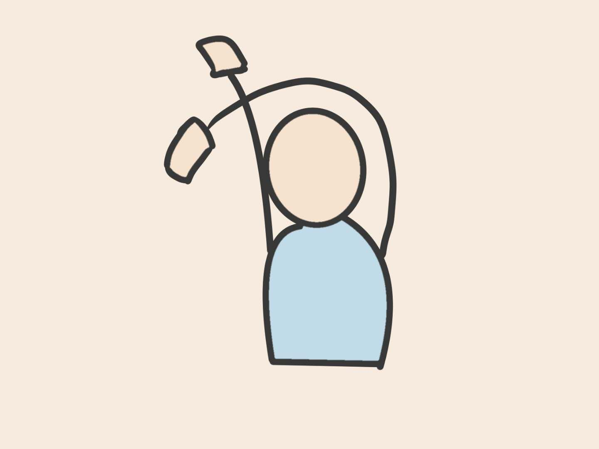

Waking up, it's already the next morning.
I feel great.
No anxiety toward unfinished work.
No roaming thoughts during bedtime.
Nothing.
It was just a peaceful night with sweet dreams.
I can't wait to start a new day!
Start a new day